地形一覧 / Terrain List
地形定義 (Terrain) は、ダンジョン・広域マップ・街を構成するすべてのマス目の種類を定義します。床・壁・鉱脈・扉・階段・トラップ・水/溶岩/毒沼などの液体、店舗・施設の入口、パターン、クエストの出入口といった全 190 種類の地形が含まれます。各地形は表示シンボル（文字・色・点灯状態）と、視界・射線の通し方、移動・飛行・水泳の可否、破壊・掘削・解除の対象になるか、といった多数の特性フラグを持ちます。interactions（体当たり・解除・破壊などの行動後に変化する先の地形）や、トラップ種別・店舗/施設種別・扉/坑道の頑丈さ（power）などの付随情報も定義されます。
Terrain definitions describe every kind of grid that makes up the dungeon, wilderness, and towns. All 190 features are listed here: floors, walls, mineral veins, doors, staircases, traps, liquids (water, lava, poison/acid/cold puddles), shop and building entrances, the Pattern, and quest entrances/exits. Each terrain carries a display symbol (character, color, lit state) plus a set of characteristic flags that govern line-of-sight, projection, whether you can walk/fly/swim over it, and whether it can be bashed, tunneled, disarmed, or disintegrated. Supporting data includes interactions (what a grid turns into after actions such as bashing, disarming, or being destroyed) and details like trap type, shop/building type, and the toughness (power) of doors and veins.
| ID / ID | 記号 / Sym | 名称 / Name | キー / Key | 色 / Color | 点灯 / Lit | 表示優先 / Map Pri. | 擬態先 / Mimic | 特性フラグ / Flags | 種別/威力 / Type / Power | 行動後の変化 / Interactions |
|---|---|---|---|---|---|---|---|---|---|---|
| 0 | 未知の地形 unknown grid |
NONE | 白/White | 1 | ||||||
| 1 | 床 open floor |
FLOOR | 白/White | ○ | 2 | 視界が通る, 飛び道具が通過できる, 移動可能, モンスター配置可, アイテムを落とせる, 床である, 飛行で通過可, テレポート先になれる | ||||
| 2 | 隠れたトラップ invisible trap |
INVIS | 白/White | ○ | 2 | FLOOR | 視界が通る, 飛び道具が通過できる, 移動可能, モンスター配置可, 隠し扉/罠が潜む, トラップがある, 踏むと罠が発動, 飛行で通過可, 分解属性の対象, テレポート先になれる | 破壊された後/When destroyed → FLOOR 隠し状態(擬態元)/Secret (hidden form) → INVIS |
||
| 3 | 守りのルーン rune of protection |
RUNE_PROTECTION | 黄/Yellow | ○ | 16 | 視界が通る, 飛び道具が通過できる, 移動可能, モンスター配置可, 走行時に足を止める対象, 常に記憶される, 守りのルーン, 飛行で通過可, 分解属性の対象 | 破壊された後/When destroyed → FLOOR | |||
| 4 | 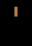 |
開いたドア open door |
OPEN_DOOR | 明るい茶/Light Brown | 10 | 視界が通る, 飛び道具が通過できる, 移動可能, モンスター配置可, 走行時に足を止める対象, 常に記憶される, 閉じるコマンド対象, 飛行で通過可, 分解属性の対象, テレポート先になれる | door pow 0 | 破壊された後/When destroyed → FLOOR 閉じた後/After closing → CLOSED_DOOR |
||
| 5 | 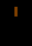 |
壊れたドア broken door |
BROKEN_DOOR | 茶/Brown (Umber) | 10 | 視界が通る, 飛び道具が通過できる, 移動可能, モンスター配置可, アイテムを落とせる, 走行時に足を止める対象, 常に記憶される, 閉じるコマンド対象, 飛行で通過可, 分解属性の対象, テレポート先になれる | door pow 0 | 破壊された後/When destroyed → FLOOR | ||
| 6 | 上り階段 up staircase |
UP_STAIR | 白/White | ○ | 35 | 視界が通る, 飛び道具が通過できる, 移動可能, モンスター配置可, 走行時に足を止める対象, 常に記憶される, 階段がある, 上りに通じる, 破壊不能の永久地形, 飛行で通過可, テレポート先になれる | 坑道化時/As a shaft → SHAFT_UP | |||
| 7 | 下り階段 down staircase |
DOWN_STAIR | 白/White | ○ | 35 | 視界が通る, 飛び道具が通過できる, 移動可能, モンスター配置可, 走行時に足を止める対象, 常に記憶される, 階段がある, 下りに通じる, 破壊不能の永久地形, 飛行で通過可, テレポート先になれる | 坑道化時/As a shaft → SHAFT_DOWN | |||
| 8 | クエスト入口 quest entrance |
QUEST_ENTER | 黄/Yellow | 35 | 視界が通る, 飛び道具が通過できる, 移動可能, モンスター配置可, 走行時に足を止める対象, 常に記憶される, 階段がある, 下りに通じる, 破壊不能の永久地形, 飛行で通過可, 特別な地形, クエストの入口, テレポート先になれる | |||||
| 9 | クエスト出口 quest exit |
QUEST_EXIT | 黄/Yellow | 35 | 視界が通る, 飛び道具が通過できる, 移動可能, モンスター配置可, 走行時に足を止める対象, 常に記憶される, 階段がある, 上りに通じる, 破壊不能の永久地形, 飛行で通過可, 特別な地形, クエストの出口, テレポート先になれる | |||||
| 10 | クエスト下り階段 quest down level |
QUEST_DOWN | 赤/Red | 35 | 視界が通る, 飛び道具が通過できる, 移動可能, モンスター配置可, 走行時に足を止める対象, 常に記憶される, 階段がある, 下りに通じる, 破壊不能の永久地形, 飛行で通過可, 特別な地形, クエスト関連, テレポート先になれる | |||||
| 11 | クエスト上がり階段 quest up level |
QUEST_UP | 赤/Red | 35 | 視界が通る, 飛び道具が通過できる, 移動可能, モンスター配置可, 走行時に足を止める対象, 常に記憶される, 階段がある, 上りに通じる, 破壊不能の永久地形, 飛行で通過可, 特別な地形, クエスト関連, テレポート先になれる | |||||
| 12 | 街の出口 town exit |
TOWN_EXIT | 緑/Green | 35 | 視界が通る, 飛び道具が通過できる, 移動可能, モンスター配置可, 走行時に足を止める対象, 常に記憶される, 階段がある, 下りに通じる, 破壊不能の永久地形, 飛行で通過可, テレポート先になれる | |||||
| 13 | 上り坑道 shaft up |
SHAFT_UP | 明るい茶/Light Brown | ○ | 35 | 視界が通る, 飛び道具が通過できる, 移動可能, モンスター配置可, 走行時に足を止める対象, 常に記憶される, 階段がある, 上りに通じる, 破壊不能の永久地形, 飛行で通過可, 坑道(2階層移動), テレポート先になれる | ||||
| 14 | 下り坑道 shaft down |
SHAFT_DOWN | 明るい茶/Light Brown | ○ | 35 | 視界が通る, 飛び道具が通過できる, 移動可能, モンスター配置可, 走行時に足を止める対象, 常に記憶される, 階段がある, 下りに通じる, 破壊不能の永久地形, 飛行で通過可, 坑道(2階層移動), テレポート先になれる | ||||
| 16 | トラップ・ドア trap door |
TRAP_TRAPDOOR | 白/White | ○ | 2 | 視界が通る, 飛び道具が通過できる, 移動可能, モンスター配置可, 走行時に足を止める対象, 常に記憶される, 解除コマンド対象, 下りに通じる, 踏むと罠が発動, 飛行で通過可, 分解属性の対象, テレポート先になれる | trap: 落とし戸/Trap door (pow 5) | 破壊された後/When destroyed → FLOOR | ||
| 17 | 落とし穴 pit |
TRAP_PIT | 灰色/Gray (Slate) | ○ | 2 | 視界が通る, 飛び道具が通過できる, 移動可能, モンスター配置可, 走行時に足を止める対象, 常に記憶される, 解除コマンド対象, 踏むと罠が発動, 飛行で通過可, 分解属性の対象, テレポート先になれる | trap: 落とし穴/Pit (pow 5) | 破壊された後/When destroyed → FLOOR | ||
| 18 | 落とし穴 pit |
TRAP_SPIKED_PIT | 灰色/Gray (Slate) | ○ | 2 | TRAP_PIT | 視界が通る, 飛び道具が通過できる, 移動可能, モンスター配置可, 走行時に足を止める対象, 常に記憶される, 解除コマンド対象, 踏むと罠が発動, 飛行で通過可, 分解属性の対象, テレポート先になれる | trap: スパイクの落とし穴/Spiked pit (pow 5) | 破壊された後/When destroyed → FLOOR | |
| 19 | 落とし穴 pit |
TRAP_POISON_PIT | 灰色/Gray (Slate) | ○ | 2 | TRAP_PIT | 視界が通る, 飛び道具が通過できる, 移動可能, モンスター配置可, 走行時に足を止める対象, 常に記憶される, 解除コマンド対象, 踏むと罠が発動, 飛行で通過可, 分解属性の対象, テレポート先になれる | trap: 毒針の落とし穴/Poison pit (pow 5) | 破壊された後/When destroyed → FLOOR | |
| 20 | 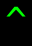 |
邪悪なルーン evil rune |
TRAP_TY_CURSE | 明るい緑/Light Green | ○ | 2 | 視界が通る, 飛び道具が通過できる, 移動可能, モンスター配置可, 走行時に足を止める対象, 常に記憶される, 解除コマンド対象, 踏むと罠が発動, 飛行で通過可, 分解属性の対象, テレポート先になれる | trap: テレポート・レベルの呪い(TYの呪い)/Ty curse (pow 5) | 破壊された後/When destroyed → FLOOR 罠発動後/After trap triggers → FLOOR |
|
| 21 | 奇妙なルーン strange rune |
TRAP_TELEPORT | オレンジ/Orange | ○ | 2 | 視界が通る, 飛び道具が通過できる, 移動可能, モンスター配置可, 走行時に足を止める対象, 常に記憶される, 解除コマンド対象, 踏むと罠が発動, 飛行で通過可, 分解属性の対象, テレポート先になれる | trap: テレポート/Teleport (pow 5) | 破壊された後/When destroyed → FLOOR | ||
| 22 | 焦げた場所 discolored spot |
TRAP_FIRE | 茶/Brown (Umber) | ○ | 2 | 視界が通る, 飛び道具が通過できる, 移動可能, モンスター配置可, 走行時に足を止める対象, 常に記憶される, 解除コマンド対象, 踏むと罠が発動, 飛行で通過可, 分解属性の対象, テレポート先になれる | trap: 火炎/Fire (pow 5) | 破壊された後/When destroyed → FLOOR | ||
| 23 | 焦げた場所 discolored spot |
TRAP_ACID | 茶/Brown (Umber) | ○ | 2 | TRAP_FIRE | 視界が通る, 飛び道具が通過できる, 移動可能, モンスター配置可, 走行時に足を止める対象, 常に記憶される, 解除コマンド対象, 踏むと罠が発動, 飛行で通過可, 分解属性の対象, テレポート先になれる | trap: 酸/Acid (pow 5) | 破壊された後/When destroyed → FLOOR | |
| 24 | ダーツ・トラップ dart trap |
TRAP_SLOW | 赤/Red | ○ | 2 | 視界が通る, 飛び道具が通過できる, 移動可能, モンスター配置可, 走行時に足を止める対象, 常に記憶される, 解除コマンド対象, 踏むと罠が発動, 飛行で通過可, 分解属性の対象, テレポート先になれる | trap: 減速(ダーツ)/Slow (dart) (pow 5) | 破壊された後/When destroyed → FLOOR | ||
| 25 | ダーツ・トラップ dart trap |
TRAP_LOSE_STR | 赤/Red | ○ | 2 | TRAP_SLOW | 視界が通る, 飛び道具が通過できる, 移動可能, モンスター配置可, 走行時に足を止める対象, 常に記憶される, 解除コマンド対象, 踏むと罠が発動, 飛行で通過可, 分解属性の対象, テレポート先になれる | trap: 腕力減少(ダーツ)/Lose STR (dart) (pow 5) | 破壊された後/When destroyed → FLOOR | |
| 26 | ダーツ・トラップ dart trap |
TRAP_LOSE_DEX | 赤/Red | ○ | 2 | TRAP_SLOW | 視界が通る, 飛び道具が通過できる, 移動可能, モンスター配置可, 走行時に足を止める対象, 常に記憶される, 解除コマンド対象, 踏むと罠が発動, 飛行で通過可, 分解属性の対象, テレポート先になれる | trap: 器用さ減少(ダーツ)/Lose DEX (dart) (pow 5) | 破壊された後/When destroyed → FLOOR | |
| 27 | ダーツ・トラップ dart trap |
TRAP_LOSE_CON | 赤/Red | ○ | 2 | TRAP_SLOW | 視界が通る, 飛び道具が通過できる, 移動可能, モンスター配置可, 走行時に足を止める対象, 常に記憶される, 解除コマンド対象, 踏むと罠が発動, 飛行で通過可, 分解属性の対象, テレポート先になれる | trap: 耐久力減少(ダーツ)/Lose CON (dart) (pow 5) | 破壊された後/When destroyed → FLOOR | |
| 28 | ガス・トラップ gas trap |
TRAP_BLIND | 緑/Green | ○ | 2 | 視界が通る, 飛び道具が通過できる, 移動可能, モンスター配置可, 走行時に足を止める対象, 常に記憶される, 解除コマンド対象, 踏むと罠が発動, 飛行で通過可, 分解属性の対象, テレポート先になれる | trap: 盲目ガス/Blind (gas) (pow 5) | 破壊された後/When destroyed → FLOOR | ||
| 29 | ガス・トラップ gas trap |
TRAP_CONFUSE | 緑/Green | ○ | 2 | TRAP_BLIND | 視界が通る, 飛び道具が通過できる, 移動可能, モンスター配置可, 走行時に足を止める対象, 常に記憶される, 解除コマンド対象, 踏むと罠が発動, 飛行で通過可, 分解属性の対象, テレポート先になれる | trap: 混乱ガス/Confuse (gas) (pow 5) | 破壊された後/When destroyed → FLOOR | |
| 30 | ガス・トラップ gas trap |
TRAP_POISON | 緑/Green | ○ | 2 | TRAP_BLIND | 視界が通る, 飛び道具が通過できる, 移動可能, モンスター配置可, 走行時に足を止める対象, 常に記憶される, 解除コマンド対象, 踏むと罠が発動, 飛行で通過可, 分解属性の対象, テレポート先になれる | trap: 毒ガス/Poison (gas) (pow 5) | 破壊された後/When destroyed → FLOOR | |
| 31 | ガス・トラップ gas trap |
TRAP_SLEEP | 緑/Green | ○ | 2 | TRAP_BLIND | 視界が通る, 飛び道具が通過できる, 移動可能, モンスター配置可, 走行時に足を止める対象, 常に記憶される, 解除コマンド対象, 踏むと罠が発動, 飛行で通過可, 分解属性の対象, テレポート先になれる | trap: 睡眠ガス/Sleep (gas) (pow 5) | 破壊された後/When destroyed → FLOOR | |
| 32 | ドア door |
CLOSED_DOOR | 明るい茶/Light Brown | 10 | 走行時に足を止める対象, 常に記憶される, 開けるコマンド対象, 体当たり対象, くさびを打てる, 岩石溶解の対象, 通過可能, 分解属性の対象 | door pow 0 tunnel pow 0 |
破壊された後/When destroyed → FLOOR 開けた後/After opening → OPEN_DOOR 体当たり後/After bashing → BROKEN_DOOR くさびを打った後/After spiking → JAMMED_DOOR_1 |
|||
| 33 | 鍵のかかったドア locked door |
LOCKED_DOOR_1 | 明るい茶/Light Brown | 10 | CLOSED_DOOR | 走行時に足を止める対象, 常に記憶される, 開けるコマンド対象, 体当たり対象, くさびを打てる, 岩石溶解の対象, 通過可能, 分解属性の対象 | door pow 1 tunnel pow 1 |
破壊された後/When destroyed → FLOOR 開けた後/After opening → OPEN_DOOR 体当たり後/After bashing → BROKEN_DOOR くさびを打った後/After spiking → JAMMED_DOOR_2 解除後/After disarming → CLOSED_DOOR |
||
| 34 | 鍵のかかったドア locked door |
LOCKED_DOOR_2 | 明るい茶/Light Brown | 10 | CLOSED_DOOR | 走行時に足を止める対象, 常に記憶される, 開けるコマンド対象, 体当たり対象, くさびを打てる, 岩石溶解の対象, 通過可能, 分解属性の対象 | door pow 2 tunnel pow 2 |
破壊された後/When destroyed → FLOOR 開けた後/After opening → OPEN_DOOR 体当たり後/After bashing → BROKEN_DOOR くさびを打った後/After spiking → JAMMED_DOOR_3 解除後/After disarming → CLOSED_DOOR |
||
| 35 | 鍵のかかったドア locked door |
LOCKED_DOOR_3 | 明るい茶/Light Brown | 10 | CLOSED_DOOR | 走行時に足を止める対象, 常に記憶される, 開けるコマンド対象, 体当たり対象, くさびを打てる, 岩石溶解の対象, 通過可能, 分解属性の対象 | door pow 3 tunnel pow 3 |
破壊された後/When destroyed → FLOOR 開けた後/After opening → OPEN_DOOR 体当たり後/After bashing → BROKEN_DOOR くさびを打った後/After spiking → JAMMED_DOOR_4 解除後/After disarming → CLOSED_DOOR |
||
| 36 | 鍵のかかったドア locked door |
LOCKED_DOOR_4 | 明るい茶/Light Brown | 10 | CLOSED_DOOR | 走行時に足を止める対象, 常に記憶される, 開けるコマンド対象, 体当たり対象, くさびを打てる, 岩石溶解の対象, 通過可能, 分解属性の対象 | door pow 4 tunnel pow 4 |
破壊された後/When destroyed → FLOOR 開けた後/After opening → OPEN_DOOR 体当たり後/After bashing → BROKEN_DOOR くさびを打った後/After spiking → JAMMED_DOOR_5 解除後/After disarming → CLOSED_DOOR |
||
| 37 | 鍵のかかったドア locked door |
LOCKED_DOOR_5 | 明るい茶/Light Brown | 10 | CLOSED_DOOR | 走行時に足を止める対象, 常に記憶される, 開けるコマンド対象, 体当たり対象, くさびを打てる, 岩石溶解の対象, 通過可能, 分解属性の対象 | door pow 5 tunnel pow 5 |
破壊された後/When destroyed → FLOOR 開けた後/After opening → OPEN_DOOR 体当たり後/After bashing → BROKEN_DOOR くさびを打った後/After spiking → JAMMED_DOOR_6 解除後/After disarming → CLOSED_DOOR |
||
| 38 | 鍵のかかったドア locked door |
LOCKED_DOOR_6 | 明るい茶/Light Brown | 10 | CLOSED_DOOR | 走行時に足を止める対象, 常に記憶される, 開けるコマンド対象, 体当たり対象, くさびを打てる, 岩石溶解の対象, 通過可能, 分解属性の対象 | door pow 6 tunnel pow 6 |
破壊された後/When destroyed → FLOOR 開けた後/After opening → OPEN_DOOR 体当たり後/After bashing → BROKEN_DOOR くさびを打った後/After spiking → JAMMED_DOOR_7 解除後/After disarming → CLOSED_DOOR |
||
| 39 | 鍵のかかったドア locked door |
LOCKED_DOOR_7 | 明るい茶/Light Brown | 10 | CLOSED_DOOR | 走行時に足を止める対象, 常に記憶される, 開けるコマンド対象, 体当たり対象, くさびを打てる, 岩石溶解の対象, 通過可能, 分解属性の対象 | door pow 7 tunnel pow 7 |
破壊された後/When destroyed → FLOOR 開けた後/After opening → OPEN_DOOR 体当たり後/After bashing → BROKEN_DOOR くさびを打った後/After spiking → JAMMED_DOOR_7 解除後/After disarming → CLOSED_DOOR |
||
| 40 | くさびが打たれたドア jammed door |
JAMMED_DOOR_0 | 明るい茶/Light Brown | 10 | CLOSED_DOOR | 走行時に足を止める対象, 常に記憶される, 体当たり対象, くさびを打てる, 岩石溶解の対象, 通過可能, 分解属性の対象 | door pow 0 tunnel pow 0 |
破壊された後/When destroyed → FLOOR 開けた後/After opening → OPEN_DOOR 体当たり後/After bashing → BROKEN_DOOR くさびを打った後/After spiking → JAMMED_DOOR_1 |
||
| 41 | くさびが打たれたドア jammed door |
JAMMED_DOOR_1 | 明るい茶/Light Brown | 10 | CLOSED_DOOR | 走行時に足を止める対象, 常に記憶される, 体当たり対象, くさびを打てる, 岩石溶解の対象, 通過可能, 分解属性の対象 | door pow 1 tunnel pow 1 |
破壊された後/When destroyed → FLOOR 開けた後/After opening → OPEN_DOOR 体当たり後/After bashing → BROKEN_DOOR くさびを打った後/After spiking → JAMMED_DOOR_2 |
||
| 42 | くさびが打たれたドア jammed door |
JAMMED_DOOR_2 | 明るい茶/Light Brown | 10 | CLOSED_DOOR | 走行時に足を止める対象, 常に記憶される, 体当たり対象, くさびを打てる, 岩石溶解の対象, 通過可能, 分解属性の対象 | door pow 2 tunnel pow 2 |
破壊された後/When destroyed → FLOOR 開けた後/After opening → OPEN_DOOR 体当たり後/After bashing → BROKEN_DOOR くさびを打った後/After spiking → JAMMED_DOOR_3 |
||
| 43 | くさびが打たれたドア jammed door |
JAMMED_DOOR_3 | 明るい茶/Light Brown | 10 | CLOSED_DOOR | 走行時に足を止める対象, 常に記憶される, 体当たり対象, くさびを打てる, 岩石溶解の対象, 通過可能, 分解属性の対象 | door pow 3 tunnel pow 3 |
破壊された後/When destroyed → FLOOR 開けた後/After opening → OPEN_DOOR 体当たり後/After bashing → BROKEN_DOOR くさびを打った後/After spiking → JAMMED_DOOR_4 |
||
| 44 | くさびが打たれたドア jammed door |
JAMMED_DOOR_4 | 明るい茶/Light Brown | 10 | CLOSED_DOOR | 走行時に足を止める対象, 常に記憶される, 体当たり対象, くさびを打てる, 岩石溶解の対象, 通過可能, 分解属性の対象 | door pow 4 tunnel pow 4 |
破壊された後/When destroyed → FLOOR 開けた後/After opening → OPEN_DOOR 体当たり後/After bashing → BROKEN_DOOR くさびを打った後/After spiking → JAMMED_DOOR_5 |
||
| 45 | くさびが打たれたドア jammed door |
JAMMED_DOOR_5 | 明るい茶/Light Brown | 10 | CLOSED_DOOR | 走行時に足を止める対象, 常に記憶される, 体当たり対象, くさびを打てる, 岩石溶解の対象, 通過可能, 分解属性の対象 | door pow 5 tunnel pow 5 |
破壊された後/When destroyed → FLOOR 開けた後/After opening → OPEN_DOOR 体当たり後/After bashing → BROKEN_DOOR くさびを打った後/After spiking → JAMMED_DOOR_6 |
||
| 46 | くさびが打たれたドア jammed door |
JAMMED_DOOR_6 | 明るい茶/Light Brown | 10 | CLOSED_DOOR | 走行時に足を止める対象, 常に記憶される, 体当たり対象, くさびを打てる, 岩石溶解の対象, 通過可能, 分解属性の対象 | door pow 6 tunnel pow 6 |
破壊された後/When destroyed → FLOOR 開けた後/After opening → OPEN_DOOR 体当たり後/After bashing → BROKEN_DOOR くさびを打った後/After spiking → JAMMED_DOOR_7 |
||
| 47 | くさびが打たれたドア jammed door |
JAMMED_DOOR_7 | 明るい茶/Light Brown | 10 | CLOSED_DOOR | 走行時に足を止める対象, 常に記憶される, 体当たり対象, くさびを打てる, 岩石溶解の対象, 通過可能, 分解属性の対象 | door pow 7 tunnel pow 7 |
破壊された後/When destroyed → FLOOR 開けた後/After opening → OPEN_DOOR 体当たり後/After bashing → BROKEN_DOOR |
||
| 48 | 隠しドア secret door |
SECRET_DOOR | 白/White | 10 | GRANITE | 隠し扉/罠が潜む, 走行時に足を止める対象, 常に記憶される, 開けるコマンド対象, 体当たり対象, 岩石溶解の対象, 通過可能, 分解属性の対象 | door pow 0 tunnel pow 0 |
破壊された後/When destroyed → FLOOR 隠し状態(擬態元)/Secret (hidden form) → CLOSED_DOOR 開けた後/After opening → OPEN_DOOR 体当たり後/After bashing → BROKEN_DOOR |
||
| 49 | 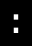 |
岩石 pile of rubble |
RUBBLE | 白/White | ○ | 2 | 常に記憶される, アイテムを含む, 岩石溶解の対象, 通過可能, 掘削コマンド対象, 分解属性の対象 | tunnel pow 10 | 破壊された後/When destroyed → FLOOR | |
| 50 | 溶岩の鉱脈 magma vein |
MAGMA_VEIN | 灰色/Gray (Slate) | ○ | 2 | 常に記憶される, 壁である, 岩石溶解の対象, 通過可能, 分解属性の対象 | tunnel pow 10 | 破壊された後/When destroyed → FLOOR 財宝を含む可能性/May contain gold → MAGMA_TREASURE |
||
| 51 | 石英の鉱脈 quartz vein |
QUARTZ_VEIN | 白/White | ○ | 2 | 常に記憶される, 壁である, 岩石溶解の対象, 通過可能, 分解属性の対象 | tunnel pow 20 | 破壊された後/When destroyed → FLOOR 財宝を含む可能性/May contain gold → QUARTZ_TREASURE |
||
| 52 | 溶岩の鉱脈(隠された財宝を含有) magma vein with hidden treasure |
MAGMA_HIDDEN | 灰色/Gray (Slate) | ○ | 2 | MAGMA_VEIN | 隠し扉/罠が潜む, 常に記憶される, 壁である, 岩石溶解の対象, 通過可能, 分解属性の対象 | tunnel pow 10 | 破壊された後/When destroyed → FLOOR 落とす財宝(ダイス)/Gold dropped (dice) → 1d1 隠し状態(擬態元)/Secret (hidden form) → MAGMA_TREASURE |
|
| 53 | 石英の鉱脈(隠された財宝を含有) quartz vein hidden treasure |
QUARTZ_HIDDEN | 白/White | ○ | 2 | QUARTZ_VEIN | 隠し扉/罠が潜む, 常に記憶される, 壁である, 岩石溶解の対象, 通過可能, 分解属性の対象 | tunnel pow 20 | 破壊された後/When destroyed → FLOOR 落とす財宝(ダイス)/Gold dropped (dice) → 1d1 隠し状態(擬態元)/Secret (hidden form) → QUARTZ_TREASURE |
|
| 54 | 財宝を含有した溶岩の鉱脈 magma vein with treasure |
MAGMA_TREASURE | オレンジ/Orange | ○ | 2 | 常に記憶される, 壁である, 岩石溶解の対象, 通過可能, 分解属性の対象 | tunnel pow 20 | 破壊された後/When destroyed → FLOOR 落とす財宝(ダイス)/Gold dropped (dice) → 1d1 隠された時/When re-hidden → MAGMA_HIDDEN |
||
| 55 | 財宝を含有した石英の鉱脈 quartz vein with treasure |
QUARTZ_TREASURE | オレンジ/Orange | ○ | 2 | 常に記憶される, 壁である, 岩石溶解の対象, 通過可能, 分解属性の対象 | tunnel pow 20 | 破壊された後/When destroyed → FLOOR 落とす財宝(ダイス)/Gold dropped (dice) → 1d1 隠された時/When re-hidden → QUARTZ_HIDDEN |
||
| 56 | 花崗岩の壁 granite wall |
GRANITE | 白/White | ○ | 2 | 常に記憶される, 壁である, 岩石溶解の対象, 通過可能, 分解属性の対象 | tunnel pow 40 | 破壊された後/When destroyed → FLOOR | ||
| 57 | 花崗岩の壁 granite wall |
GRANITE_INNER | 白/White | ○ | 2 | GRANITE | 常に記憶される, 壁である, 岩石溶解の対象, 通過可能, 分解属性の対象 | tunnel pow 40 | 破壊された後/When destroyed → FLOOR | |
| 58 | 花崗岩の壁 granite wall |
GRANITE_OUTER | 白/White | ○ | 2 | GRANITE | 常に記憶される, 壁である, 岩石溶解の対象, 通過可能, 分解属性の対象 | tunnel pow 40 | 破壊された後/When destroyed → FLOOR | |
| 59 | 花崗岩の壁 granite wall |
GRANITE_SOLID | 白/White | ○ | 2 | GRANITE | 常に記憶される, 壁である, 岩石溶解の対象, 通過可能, 分解属性の対象 | tunnel pow 40 | 破壊された後/When destroyed → FLOOR | |
| 60 | 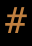 |
永久岩の壁 permanent wall |
PERMANENT | 明るい茶/Light Brown | ○ | 5 | 常に記憶される, 壁である, 破壊不能の永久地形 | tunnel pow 0 | 永久解除時/When made non-permanent → GRANITE | |
| 61 | 永久岩の壁 permanent wall |
PERMANENT_INNER | 明るい茶/Light Brown | ○ | 5 | PERMANENT | 常に記憶される, 壁である, 破壊不能の永久地形 | tunnel pow 0 | 永久解除時/When made non-permanent → GRANITE | |
| 62 | 永久岩の壁 permanent wall |
PERMANENT_OUTER | 明るい茶/Light Brown | ○ | 5 | PERMANENT | 常に記憶される, 壁である, 破壊不能の永久地形 | tunnel pow 0 | 永久解除時/When made non-permanent → GRANITE | |
| 63 | 永久岩の壁 permanent wall |
PERMANENT_SOLID | 明るい茶/Light Brown | ○ | 5 | PERMANENT | 常に記憶される, 壁である, 破壊不能の永久地形 | tunnel pow 0 | 永久解除時/When made non-permanent → GRANITE | |
| 64 | 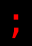 |
爆発ルーン rune of explosion |
RUNE_EXPLOSION | 明るい赤/Light Red | ○ | 16 | 視界が通る, 飛び道具が通過できる, 移動可能, モンスター配置可, 走行時に足を止める対象, 常に記憶される, 飛行で通過可, 爆発のルーン, 分解属性の対象 | 破壊された後/When destroyed → FLOOR | ||
| 65 | パターン出発点 Pattern startpoint |
PATTERN_START | 白/White | 16 | 視界が通る, 飛び道具が通過できる, 移動可能, 走行時に足を止める対象, 常に記憶される, 破壊不能の永久地形, 飛行で通過可 | pattern: パターンの開始/Pattern start | ||||
| 66 | パターンの一部 section of the Pattern |
PATTERN_1 | 明るい青/Light Blue | 16 | 視界が通る, 飛び道具が通過できる, 移動可能, 走行時に足を止める対象, 常に記憶される, 破壊不能の永久地形, 飛行で通過可 | pattern: パターン第1区画/Pattern tile 1 | ||||
| 67 | パターンの一部 section of the Pattern |
PATTERN_2 | 青/Blue | 16 | 視界が通る, 飛び道具が通過できる, 移動可能, 走行時に足を止める対象, 常に記憶される, 破壊不能の永久地形, 飛行で通過可 | pattern: パターン第2区画/Pattern tile 2 | ||||
| 68 | パターンの一部 section of the Pattern |
PATTERN_3 | 明るい青/Light Blue | 16 | 視界が通る, 飛び道具が通過できる, 移動可能, 走行時に足を止める対象, 常に記憶される, 破壊不能の永久地形, 飛行で通過可 | pattern: パターン第3区画/Pattern tile 3 | ||||
| 69 | パターンの一部 section of the Pattern |
PATTERN_4 | 青/Blue | 16 | 視界が通る, 飛び道具が通過できる, 移動可能, 走行時に足を止める対象, 常に記憶される, 破壊不能の永久地形, 飛行で通過可 | pattern: パターン第4区画/Pattern tile 4 | ||||
| 70 | パターンの一部 section of the Pattern |
PATTERN_END | 明るい灰色/Light Gray | 16 | 視界が通る, 飛び道具が通過できる, 移動可能, 走行時に足を止める対象, 常に記憶される, 破壊不能の永久地形, 飛行で通過可 | pattern: パターンの終点/Pattern end | ||||
| 71 | パターンの一部(discharged) section of the Pattern (discharged) |
PATTERN_OLD | 明るい灰色/Light Gray | 16 | 視界が通る, 飛び道具が通過できる, 移動可能, 走行時に足を止める対象, 常に記憶される, 破壊不能の永久地形, 飛行で通過可 | pattern: 古いパターン/Old pattern | ||||
| 72 | パターン出口 Pattern exit |
PATTERN_EXIT | 白/White | 16 | 視界が通る, 飛び道具が通過できる, 移動可能, 走行時に足を止める対象, 常に記憶される, 破壊不能の永久地形, 飛行で通過可 | pattern: パターン・テレポート/Pattern teleport | ||||
| 73 | 壊れたパターンの一部 corrupted section of the Pattern |
PATTERN_CORRUPTED | 暗い灰色/Dark Gray | 16 | 視界が通る, 飛び道具が通過できる, 移動可能, 走行時に足を止める対象, 常に記憶される, 破壊不能の永久地形, 飛行で通過可 | pattern: 壊れたパターン/Wrecked pattern | ||||
| 74 | 雑貨屋 General Store |
GENERAL_STORE | 明るい茶/Light Brown | 10 | 視界が通る, 飛び道具が通過できる, 移動可能, 走行時に足を止める対象, 常に記憶される, 破壊不能の永久地形, 常に光っている | store: 雑貨屋/General Store door pow 0 |
||||
| 75 | 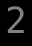 |
防具屋 Armoury |
ARMOURY | 灰色/Gray (Slate) | 10 | 視界が通る, 飛び道具が通過できる, 移動可能, 走行時に足を止める対象, 常に記憶される, 破壊不能の永久地形, 常に光っている | store: 防具屋/Armoury door pow 0 |
|||
| 76 | 武器専門店 Weaponsmith's Shop |
WEAPON_SMITHS | 白/White | 10 | 視界が通る, 飛び道具が通過できる, 移動可能, 走行時に足を止める対象, 常に記憶される, 破壊不能の永久地形, 常に光っている | store: 武器専門店/Weaponsmith door pow 0 |
||||
| 77 | 寺院 Temple |
TEMPLE | 緑/Green | 10 | 視界が通る, 飛び道具が通過できる, 移動可能, 走行時に足を止める対象, 常に記憶される, 破壊不能の永久地形, 常に光っている | store: 寺院/Temple door pow 0 |
||||
| 78 | 錬金術の店 Alchemy Shop |
ALCHEMY_SHOP | 青/Blue | 10 | 視界が通る, 飛び道具が通過できる, 移動可能, 走行時に足を止める対象, 常に記憶される, 破壊不能の永久地形, 常に光っている | store: 錬金術の店/Alchemist door pow 0 |
||||
| 79 | 魔法の店 Magic Shop |
MAGIC_SHOP | 赤/Red | 10 | 視界が通る, 飛び道具が通過できる, 移動可能, 走行時に足を止める対象, 常に記憶される, 破壊不能の永久地形, 常に光っている | store: 魔法の店/Magic Shop door pow 0 |
||||
| 80 | ブラック・マーケット Black Market |
BLACK_MARKET | 暗い灰色/Dark Gray | 10 | 視界が通る, 飛び道具が通過できる, 移動可能, 走行時に足を止める対象, 常に記憶される, 破壊不能の永久地形, 常に光っている | store: ブラックマーケット/Black Market door pow 0 |
||||
| 81 | 我が家 Home |
HOME | 黄/Yellow | 10 | 視界が通る, 飛び道具が通過できる, 移動可能, 走行時に足を止める対象, 常に記憶される, 破壊不能の永久地形, 常に光っている | store: 我が家/Home door pow 0 |
||||
| 82 | 書店 Bookstore |
BOOKSTORE | オレンジ/Orange | 10 | 視界が通る, 飛び道具が通過できる, 移動可能, 走行時に足を止める対象, 常に記憶される, 破壊不能の永久地形, 常に光っている | store: 書店/Bookstore door pow 0 |
||||
| 83 | 深い水 deep water |
DEEP_WATER | 青/Blue | ○ | 2 | 視界が通る, 飛び道具が通過できる, 移動可能, モンスター配置可, 常に記憶される, 水がある, 深い, 飛行で通過可, 泳いで通過可, テレポート先になれる | ||||
| 84 | 浅い水の流れ shallow water |
SHALLOW_WATER | 明るい青/Light Blue | ○ | 2 | 視界が通る, 飛び道具が通過できる, 移動可能, モンスター配置可, アイテムを落とせる, 床である, 常に記憶される, 水がある, 浅い, 飛行で通過可, 泳いで通過可, テレポート先になれる | ||||
| 85 | 深い溶岩溜り deep lava |
DEEP_LAVA | 赤/Red | 2 | 視界が通る, 飛び道具が通過できる, 移動可能, モンスター配置可, 常に記憶される, 常に光っている, 溶岩がある, 深い, 飛行で通過可, テレポート先になれる | |||||
| 86 | 浅い溶岩の流れ shallow lava |
SHALLOW_LAVA | オレンジ/Orange | 2 | 視界が通る, 飛び道具が通過できる, 移動可能, モンスター配置可, アイテムを落とせる, 常に記憶される, 溶岩がある, 浅い, 飛行で通過可, テレポート先になれる | |||||
| 87 | 暗い穴 dark pit |
DARK_PIT | 暗い灰色/Dark Gray | 1 | 視界が通る, 飛び道具が通過できる, 常に記憶される, 飛行で通過可, テレポート先になれる | |||||
| 88 | 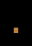 |
砂地 dirt |
DIRT | 茶/Brown (Umber) | ○ | 2 | 視界が通る, 飛び道具が通過できる, 移動可能, モンスター配置可, アイテムを落とせる, 床である, 飛行で通過可, テレポート先になれる | |||
| 89 | 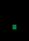 |
草地 patch of grass |
GRASS | 緑/Green | ○ | 2 | 視界が通る, 飛び道具が通過できる, 移動可能, モンスター配置可, アイテムを落とせる, 床である, 飛行で通過可, 植物が生えている, テレポート先になれる | |||
| 90 | コンパクトルーン compact rune |
TRAP_TRAPS | 暗い灰色/Dark Gray | ○ | 2 | 視界が通る, 飛び道具が通過できる, 移動可能, モンスター配置可, 走行時に足を止める対象, 常に記憶される, 解除コマンド対象, 踏むと罠が発動, 飛行で通過可, 分解属性の対象, テレポート先になれる | trap: トラップ召喚/Summon traps (pow 5) | 破壊された後/When destroyed → FLOOR 罠発動後/After trap triggers → FLOOR |
||
| 91 | 警報装置 alarm |
TRAP_ALARM | 明るい赤/Light Red | ○ | 2 | 視界が通る, 飛び道具が通過できる, 移動可能, モンスター配置可, 走行時に足を止める対象, 常に記憶される, 解除コマンド対象, 踏むと罠が発動, 飛行で通過可, 分解属性の対象, テレポート先になれる | trap: 警報/Alarm (pow 5) | 破壊された後/When destroyed → FLOOR | ||
| 92 | 開門スイッチ wall opening trap |
TRAP_OPEN | 白/White | ○ | 10 | 視界が通る, 飛び道具が通過できる, 移動可能, モンスター配置可, 走行時に足を止める対象, 常に記憶される, 解除コマンド対象, 踏むと罠が発動, 飛行で通過可, 分解属性の対象, テレポート先になれる | trap: 開放(周囲の壁破壊)/Open (wall-breaker) (pow 100) | 破壊された後/When destroyed → FLOOR | ||
| 93 | 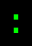 |
花 flower |
FLOWER | 明るい緑/Light Green | ○ | 2 | 視界が通る, 飛び道具が通過できる, 移動可能, モンスター配置可, アイテムを落とせる, 床である, 常に記憶される, 飛行で通過可, 植物が生えている, 分解属性の対象, テレポート先になれる | 破壊された後/When destroyed → GRASS | ||
| 94 | 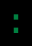 |
草むら brake |
BRAKE | 緑/Green | ○ | 2 | 視界が通る, 飛び道具が通過できる, 移動可能, モンスター配置可, アイテムを落とせる, 床である, 常に記憶される, 飛行で通過可, 植物が生えている, 分解属性の対象, テレポート先になれる | 破壊された後/When destroyed → GRASS | ||
| 95 | 博物館 Museum |
MUSEUM | 紫/Violet | 10 | 視界が通る, 飛び道具が通過できる, 移動可能, 走行時に足を止める対象, 常に記憶される, 破壊不能の永久地形, 常に光っている | store: 博物館/Museum door pow 0 |
||||
| 96 | 木 tree |
TREE | 明るい緑/Light Green | ○ | 2 | 移動可能, モンスター配置可, アイテムを落とせる, 常に記憶される, 自動移動で迂回, 飛行で通過可, 木が生えている, 植物が生えている, 分解属性の対象 | tunnel pow 10 | 破壊された後/When destroyed → GRASS | ||
| 97 | 山脈 mountain chain |
MOUNTAIN | オレンジ/Orange | ○ | 5 | 常に記憶される, 壁である, 破壊不能の永久地形, 山地形(広域), テレポート先になれる, モンスター配置可, 飛行で通過可, 自動移動で迂回 | tunnel pow 0 | 永久解除時/When made non-permanent → INNER | ||
| 98 | 山脈(壁) mountain chain (wall) |
MOUNTAIN_WALL | オレンジ/Orange | ○ | 5 | MOUNTAIN | 常に記憶される, 壁である, 破壊不能の永久地形 | tunnel pow 0 | 永久解除時/When made non-permanent → INNER | |
| 128 | 建物 Building |
BUILDING_0 | 明るい茶/Light Brown | 10 | 視界が通る, 飛び道具が通過できる, 移動可能, 走行時に足を止める対象, 常に記憶される, 破壊不能の永久地形, 常に光っている | building: BUILDING_00 door pow 0 |
||||
| 129 | 建物 Building |
BUILDING_1 | 明るい茶/Light Brown | 10 | 視界が通る, 飛び道具が通過できる, 移動可能, 走行時に足を止める対象, 常に記憶される, 破壊不能の永久地形, 常に光っている | building: BUILDING_01 door pow 0 |
||||
| 130 | 建物 Building |
BUILDING_2 | 紫/Violet | 10 | 視界が通る, 飛び道具が通過できる, 移動可能, 走行時に足を止める対象, 常に記憶される, 破壊不能の永久地形, 常に光っている | building: BUILDING_02 door pow 0 |
||||
| 131 | 建物 Building |
BUILDING_3 | 明るい茶/Light Brown | 10 | 視界が通る, 飛び道具が通過できる, 移動可能, 走行時に足を止める対象, 常に記憶される, 破壊不能の永久地形, 常に光っている | building: BUILDING_03 door pow 0 |
||||
| 132 | 建物 Building |
BUILDING_4 | 明るい茶/Light Brown | 10 | 視界が通る, 飛び道具が通過できる, 移動可能, 走行時に足を止める対象, 常に記憶される, 破壊不能の永久地形, 常に光っている | building: BUILDING_04 door pow 0 |
||||
| 133 | 建物 Building |
BUILDING_5 | 明るい茶/Light Brown | 10 | 視界が通る, 飛び道具が通過できる, 移動可能, 走行時に足を止める対象, 常に記憶される, 破壊不能の永久地形, 常に光っている | building: BUILDING_05 door pow 0 |
||||
| 134 | 建物 Building |
BUILDING_6 | 明るい茶/Light Brown | 10 | 視界が通る, 飛び道具が通過できる, 移動可能, 走行時に足を止める対象, 常に記憶される, 破壊不能の永久地形, 常に光っている | building: BUILDING_06 door pow 0 |
||||
| 135 | 建物 Building |
BUILDING_7 | オレンジ/Orange | 10 | 視界が通る, 飛び道具が通過できる, 移動可能, 走行時に足を止める対象, 常に記憶される, 破壊不能の永久地形, 常に光っている | building: BUILDING_07 door pow 0 |
||||
| 136 | 建物 Building |
BUILDING_8 | 明るい赤/Light Red | 10 | 視界が通る, 飛び道具が通過できる, 移動可能, 走行時に足を止める対象, 常に記憶される, 破壊不能の永久地形, 常に光っている | building: BUILDING_08 door pow 0 |
||||
| 137 | 建物 Building |
BUILDING_9 | 明るい緑/Light Green | 10 | 視界が通る, 飛び道具が通過できる, 移動可能, 走行時に足を止める対象, 常に記憶される, 破壊不能の永久地形, 常に光っている | building: BUILDING_09 door pow 0 |
||||
| 138 | 建物 Building |
BUILDING_10 | 紫/Violet | 10 | 視界が通る, 飛び道具が通過できる, 移動可能, 走行時に足を止める対象, 常に記憶される, 破壊不能の永久地形, 常に光っている | building: BUILDING_10 door pow 0 |
||||
| 139 | 建物 Building |
BUILDING_11 | 茶/Brown (Umber) | 10 | 視界が通る, 飛び道具が通過できる, 移動可能, 走行時に足を止める対象, 常に記憶される, 破壊不能の永久地形, 常に光っている | building: BUILDING_11 door pow 0 |
||||
| 140 | 建物 Building |
BUILDING_12 | 白/White | 10 | 視界が通る, 飛び道具が通過できる, 移動可能, 走行時に足を止める対象, 常に記憶される, 破壊不能の永久地形, 常に光っている | building: BUILDING_12 door pow 0 |
||||
| 141 | 建物 Building |
BUILDING_13 | 明るい青/Light Blue | 10 | 視界が通る, 飛び道具が通過できる, 移動可能, 走行時に足を止める対象, 常に記憶される, 破壊不能の永久地形, 常に光っている | building: BUILDING_13 door pow 0 |
||||
| 142 | 建物 Building |
BUILDING_14 | 明るい青/Light Blue | 10 | 視界が通る, 飛び道具が通過できる, 移動可能, 走行時に足を止める対象, 常に記憶される, 破壊不能の永久地形, 常に光っている | building: BUILDING_14 door pow 0 |
||||
| 143 | 建物 Building |
BUILDING_15 | 明るい青/Light Blue | 10 | 視界が通る, 飛び道具が通過できる, 移動可能, 走行時に足を止める対象, 常に記憶される, 破壊不能の永久地形, 常に光っている | building: BUILDING_15 door pow 0 |
||||
| 144 | 建物 Building |
BUILDING_16 | 明るい青/Light Blue | 10 | 視界が通る, 飛び道具が通過できる, 移動可能, 走行時に足を止める対象, 常に記憶される, 破壊不能の永久地形, 常に光っている | building: BUILDING_16 door pow 0 |
||||
| 145 | 建物 Building |
BUILDING_17 | 明るい青/Light Blue | 10 | 視界が通る, 飛び道具が通過できる, 移動可能, 走行時に足を止める対象, 常に記憶される, 破壊不能の永久地形, 常に光っている | building: BUILDING_17 door pow 0 |
||||
| 146 | 建物 Building |
BUILDING_18 | 明るい青/Light Blue | 10 | 視界が通る, 飛び道具が通過できる, 移動可能, 走行時に足を止める対象, 常に記憶される, 破壊不能の永久地形, 常に光っている | building: BUILDING_18 door pow 0 |
||||
| 147 | 建物 Building |
BUILDING_19 | 明るい青/Light Blue | 10 | 視界が通る, 飛び道具が通過できる, 移動可能, 走行時に足を止める対象, 常に記憶される, 破壊不能の永久地形, 常に光っている | building: BUILDING_19 door pow 0 |
||||
| 148 | 建物 Building |
BUILDING_20 | 明るい青/Light Blue | 10 | 視界が通る, 飛び道具が通過できる, 移動可能, 走行時に足を止める対象, 常に記憶される, 破壊不能の永久地形, 常に光っている | building: BUILDING_20 door pow 0 |
||||
| 149 | 建物 Building |
BUILDING_21 | 明るい青/Light Blue | 10 | 視界が通る, 飛び道具が通過できる, 移動可能, 走行時に足を止める対象, 常に記憶される, 破壊不能の永久地形, 常に光っている | building: BUILDING_21 door pow 0 |
||||
| 150 | 建物 Building |
BUILDING_22 | 明るい青/Light Blue | 10 | 視界が通る, 飛び道具が通過できる, 移動可能, 走行時に足を止める対象, 常に記憶される, 破壊不能の永久地形, 常に光っている | building: BUILDING_22 door pow 0 |
||||
| 151 | 建物 Building |
BUILDING_23 | 明るい青/Light Blue | 10 | 視界が通る, 飛び道具が通過できる, 移動可能, 走行時に足を止める対象, 常に記憶される, 破壊不能の永久地形, 常に光っている | building: BUILDING_23 door pow 0 |
||||
| 152 | 建物 Building |
BUILDING_24 | 明るい青/Light Blue | 10 | 視界が通る, 飛び道具が通過できる, 移動可能, 走行時に足を止める対象, 常に記憶される, 破壊不能の永久地形, 常に光っている | building: BUILDING_24 door pow 0 |
||||
| 153 | 建物 Building |
BUILDING_25 | 明るい青/Light Blue | 10 | 視界が通る, 飛び道具が通過できる, 移動可能, 走行時に足を止める対象, 常に記憶される, 破壊不能の永久地形, 常に光っている | building: BUILDING_25 door pow 0 |
||||
| 154 | 建物 Building |
BUILDING_26 | 明るい青/Light Blue | 10 | 視界が通る, 飛び道具が通過できる, 移動可能, 走行時に足を止める対象, 常に記憶される, 破壊不能の永久地形, 常に光っている | building: BUILDING_26 door pow 0 |
||||
| 155 | 建物 Building |
BUILDING_27 | 明るい青/Light Blue | 10 | 視界が通る, 飛び道具が通過できる, 移動可能, 走行時に足を止める対象, 常に記憶される, 破壊不能の永久地形, 常に光っている | building: BUILDING_27 door pow 0 |
||||
| 156 | 建物 Building |
BUILDING_28 | 明るい青/Light Blue | 10 | 視界が通る, 飛び道具が通過できる, 移動可能, 走行時に足を止める対象, 常に記憶される, 破壊不能の永久地形, 常に光っている | building: BUILDING_28 door pow 0 |
||||
| 157 | 建物 Building |
BUILDING_29 | 明るい青/Light Blue | 10 | 視界が通る, 飛び道具が通過できる, 移動可能, 走行時に足を止める対象, 常に記憶される, 破壊不能の永久地形, 常に光っている | building: BUILDING_29 door pow 0 |
||||
| 158 | 建物 Building |
BUILDING_30 | 明るい青/Light Blue | 10 | 視界が通る, 飛び道具が通過できる, 移動可能, 走行時に足を止める対象, 常に記憶される, 破壊不能の永久地形, 常に光っている | building: BUILDING_30 door pow 0 |
||||
| 159 | 建物 Building |
BUILDING_31 | 明るい青/Light Blue | 10 | 視界が通る, 飛び道具が通過できる, 移動可能, 走行時に足を止める対象, 常に記憶される, 破壊不能の永久地形, 常に光っている | building: BUILDING_31 door pow 0 |
||||
| 160 | FLOOR | 白/White | FLOOR | convert: 床に変換/To floor | ||||||
| 161 | WALL | 白/White | GRANITE | convert: 壁に変換/To wall | ||||||
| 162 | INNER | 白/White | GRANITE | convert: 内壁に変換/To inner wall | ||||||
| 163 | OUTER | 白/White | GRANITE | convert: 外壁に変換/To outer wall | ||||||
| 164 | SOLID | 白/White | GRANITE | convert: 固い壁に変換/To solid wall | ||||||
| 165 | STREAM1 | 白/White | MAGMA_VEIN | convert: 鉱脈/流れに変換/To stream/vein | ||||||
| 166 | STREAM2 | 白/White | QUARTZ_VEIN | convert: 鉱脈/流れに変換/To stream/vein | ||||||
| 191 | 入場門 gate of arena |
ARENA_GATE | 紫/Violet | 10 | 視界が通る, 飛び道具が通過できる, 移動可能, 走行時に足を止める対象, 常に記憶される, 破壊不能の永久地形 | building: BUILDING_02 door pow 0 |
||||
| 192 | 街 Town |
TOWN | 明るい灰色/Light Gray | 35 | 視界が通る, 飛び道具が通過できる, 移動可能, モンスター配置可, 走行時に足を止める対象, 常に記憶される, 破壊不能の永久地形, 飛行で通過可, 特別な地形, 街がある(広域), テレポート先になれる | |||||
| 193 | ダンジョンへの入口 entrance to dungeon |
ENTRANCE | 紫/Violet | 35 | 視界が通る, 飛び道具が通過できる, 移動可能, モンスター配置可, 走行時に足を止める対象, 常に記憶される, 階段がある, 下りに通じる, 破壊不能の永久地形, 飛行で通過可, 特別な地形, ダンジョン入口(広域), テレポート先になれる | |||||
| 194 | 沼地 swamp |
SWAMP | 明るい青/Light Blue | ○ | 2 | 視界が通る, 飛び道具が通過できる, 移動可能, モンスター配置可, アイテムを落とせる, 床である, 常に記憶される, 水がある, 浅い, 飛行で通過可, 泳いで通過可, テレポート先になれる | ||||
| 195 | 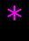 |
鏡 mirror |
MIRROR | 紫/Violet | ○ | 16 | 視界が通る, 飛び道具が通過できる, 移動可能, モンスター配置可, 走行時に足を止める対象, 常に記憶される, 飛行で通過可, 分解属性の対象, 鏡が張られている | |||
| 196 | 未知の地形 (未感知) unknown grid (not detected) |
UNDETECTED | 暗い灰色/Dark Gray | 1 | ||||||
| 197 | ハルマゲドン・トラップ Armageddon trap |
TRAP_ARMAGEDDON | 紫/Violet | ○ | 10 | 視界が通る, 飛び道具が通過できる, 移動可能, モンスター配置可, 走行時に足を止める対象, 常に記憶される, 解除コマンド対象, 踏むと罠が発動, 飛行で通過可, 分解属性の対象, テレポート先になれる | trap: ハルマゲドン召喚/Armageddon summon (pow 100) | 破壊された後/When destroyed → FLOOR 罠発動後/After trap triggers → FLOOR |
||
| 198 | ピラニア・トラップ Piranha trap |
TRAP_PIRANHA | 青/Blue | ○ | 10 | 視界が通る, 飛び道具が通過できる, 移動可能, モンスター配置可, 走行時に足を止める対象, 常に記憶される, 解除コマンド対象, 踏むと罠が発動, 飛行で通過可, 分解属性の対象, テレポート先になれる | trap: ピラニア(水路化)/Piranha (pow 100) | 破壊された後/When destroyed → FLOOR 罠発動後/After trap triggers → FLOOR |
||
| 199 | ガラスの床 glass floor |
GLASS_FLOOR | 白/White | ○ | 2 | 視界が通る, 飛び道具が通過できる, 移動可能, モンスター配置可, アイテムを落とせる, 床である, 飛行で通過可, 分解属性の対象, テレポート先になれる, ガラス製 | 破壊された後/When destroyed → DARK_PIT | |||
| 200 | 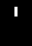 |
開いたガラスのドア open glass door |
OPEN_GLASS_DOOR | 白/White | 10 | 視界が通る, 飛び道具が通過できる, 移動可能, モンスター配置可, 走行時に足を止める対象, 常に記憶される, 閉じるコマンド対象, 飛行で通過可, 分解属性の対象, テレポート先になれる, ガラス製 | door pow 0 | 破壊された後/When destroyed → FLOOR 閉じた後/After closing → CLOSED_GLASS_DOOR |
||
| 201 | 壊れたガラスのドア broken glass door |
BROKEN_GLASS_DOOR | 明るい灰色/Light Gray | 10 | 視界が通る, 飛び道具が通過できる, 移動可能, モンスター配置可, アイテムを落とせる, 走行時に足を止める対象, 常に記憶される, 閉じるコマンド対象, 飛行で通過可, 分解属性の対象, テレポート先になれる, ガラス製 | door pow 0 | 破壊された後/When destroyed → FLOOR | |||
| 202 | ガラスのドア glass door |
CLOSED_GLASS_DOOR | 白/White | 10 | 視界が通る, 走行時に足を止める対象, 常に記憶される, 開けるコマンド対象, 体当たり対象, くさびを打てる, 岩石溶解の対象, 通過可能, 分解属性の対象, ガラス製 | door pow 0 tunnel pow 0 |
破壊された後/When destroyed → FLOOR 開けた後/After opening → OPEN_GLASS_DOOR 体当たり後/After bashing → BROKEN_GLASS_DOOR くさびを打った後/After spiking → JAMMED_GLASS_DOOR_1 |
|||
| 203 | 鍵のかかったガラスのドア locked glass door |
LOCKED_GLASS_DOOR_1 | 白/White | 10 | CLOSED_GLASS_DOOR | 視界が通る, 走行時に足を止める対象, 常に記憶される, 開けるコマンド対象, 体当たり対象, くさびを打てる, 岩石溶解の対象, 通過可能, 分解属性の対象, ガラス製 | door pow 1 tunnel pow 1 |
破壊された後/When destroyed → FLOOR 開けた後/After opening → OPEN_GLASS_DOOR 体当たり後/After bashing → BROKEN_GLASS_DOOR くさびを打った後/After spiking → JAMMED_GLASS_DOOR_2 解除後/After disarming → CLOSED_GLASS_DOOR |
||
| 204 | 鍵のかかったガラスのドア locked glass door |
LOCKED_GLASS_DOOR_2 | 白/White | 10 | CLOSED_GLASS_DOOR | 視界が通る, 走行時に足を止める対象, 常に記憶される, 開けるコマンド対象, 体当たり対象, くさびを打てる, 岩石溶解の対象, 通過可能, 分解属性の対象, ガラス製 | door pow 2 tunnel pow 2 |
破壊された後/When destroyed → FLOOR 開けた後/After opening → OPEN_GLASS_DOOR 体当たり後/After bashing → BROKEN_GLASS_DOOR くさびを打った後/After spiking → JAMMED_GLASS_DOOR_3 解除後/After disarming → CLOSED_GLASS_DOOR |
||
| 205 | 鍵のかかったガラスのドア locked glass door |
LOCKED_GLASS_DOOR_3 | 白/White | 10 | CLOSED_GLASS_DOOR | 視界が通る, 走行時に足を止める対象, 常に記憶される, 開けるコマンド対象, 体当たり対象, くさびを打てる, 岩石溶解の対象, 通過可能, 分解属性の対象, ガラス製 | door pow 3 tunnel pow 3 |
破壊された後/When destroyed → FLOOR 開けた後/After opening → OPEN_GLASS_DOOR 体当たり後/After bashing → BROKEN_GLASS_DOOR くさびを打った後/After spiking → JAMMED_GLASS_DOOR_4 解除後/After disarming → CLOSED_GLASS_DOOR |
||
| 206 | 鍵のかかったガラスのドア locked glass door |
LOCKED_GLASS_DOOR_4 | 白/White | 10 | CLOSED_GLASS_DOOR | 視界が通る, 走行時に足を止める対象, 常に記憶される, 開けるコマンド対象, 体当たり対象, くさびを打てる, 岩石溶解の対象, 通過可能, 分解属性の対象, ガラス製 | door pow 4 tunnel pow 4 |
破壊された後/When destroyed → FLOOR 開けた後/After opening → OPEN_GLASS_DOOR 体当たり後/After bashing → BROKEN_GLASS_DOOR くさびを打った後/After spiking → JAMMED_GLASS_DOOR_5 解除後/After disarming → CLOSED_GLASS_DOOR |
||
| 207 | 鍵のかかったガラスのドア locked glass door |
LOCKED_GLASS_DOOR_5 | 白/White | 10 | CLOSED_GLASS_DOOR | 視界が通る, 走行時に足を止める対象, 常に記憶される, 開けるコマンド対象, 体当たり対象, くさびを打てる, 岩石溶解の対象, 通過可能, 分解属性の対象, ガラス製 | door pow 5 tunnel pow 5 |
破壊された後/When destroyed → FLOOR 開けた後/After opening → OPEN_GLASS_DOOR 体当たり後/After bashing → BROKEN_GLASS_DOOR くさびを打った後/After spiking → JAMMED_GLASS_DOOR_6 解除後/After disarming → CLOSED_GLASS_DOOR |
||
| 208 | 鍵のかかったガラスのドア locked glass door |
LOCKED_GLASS_DOOR_6 | 白/White | 10 | CLOSED_GLASS_DOOR | 視界が通る, 走行時に足を止める対象, 常に記憶される, 開けるコマンド対象, 体当たり対象, くさびを打てる, 岩石溶解の対象, 通過可能, 分解属性の対象, ガラス製 | door pow 6 tunnel pow 6 |
破壊された後/When destroyed → FLOOR 開けた後/After opening → OPEN_GLASS_DOOR 体当たり後/After bashing → BROKEN_GLASS_DOOR くさびを打った後/After spiking → JAMMED_GLASS_DOOR_7 解除後/After disarming → CLOSED_GLASS_DOOR |
||
| 209 | 鍵のかかったガラスのドア locked glass door |
LOCKED_GLASS_DOOR_7 | 白/White | 10 | CLOSED_GLASS_DOOR | 視界が通る, 走行時に足を止める対象, 常に記憶される, 開けるコマンド対象, 体当たり対象, くさびを打てる, 岩石溶解の対象, 通過可能, 分解属性の対象, ガラス製 | door pow 7 tunnel pow 7 |
破壊された後/When destroyed → FLOOR 開けた後/After opening → OPEN_GLASS_DOOR 体当たり後/After bashing → BROKEN_GLASS_DOOR くさびを打った後/After spiking → JAMMED_GLASS_DOOR_7 解除後/After disarming → CLOSED_GLASS_DOOR |
||
| 210 | くさびが打たれたガラスのドア jammed glass door |
JAMMED_GLASS_DOOR_0 | 白/White | 10 | CLOSED_GLASS_DOOR | 視界が通る, 走行時に足を止める対象, 常に記憶される, 体当たり対象, くさびを打てる, 岩石溶解の対象, 通過可能, 分解属性の対象, ガラス製 | door pow 0 tunnel pow 0 |
破壊された後/When destroyed → FLOOR 開けた後/After opening → BROKEN_GLASS_DOOR 体当たり後/After bashing → BROKEN_GLASS_DOOR くさびを打った後/After spiking → JAMMED_GLASS_DOOR_1 |
||
| 211 | くさびが打たれたガラスのドア jammed glass door |
JAMMED_GLASS_DOOR_1 | 白/White | 10 | CLOSED_GLASS_DOOR | 視界が通る, 走行時に足を止める対象, 常に記憶される, 体当たり対象, くさびを打てる, 岩石溶解の対象, 通過可能, 分解属性の対象, ガラス製 | door pow 1 tunnel pow 1 |
破壊された後/When destroyed → FLOOR 開けた後/After opening → BROKEN_GLASS_DOOR 体当たり後/After bashing → BROKEN_GLASS_DOOR くさびを打った後/After spiking → JAMMED_GLASS_DOOR_2 |
||
| 212 | くさびが打たれたガラスのドア jammed glass door |
JAMMED_GLASS_DOOR_2 | 白/White | 10 | CLOSED_GLASS_DOOR | 視界が通る, 走行時に足を止める対象, 常に記憶される, 体当たり対象, くさびを打てる, 岩石溶解の対象, 通過可能, 分解属性の対象, ガラス製 | door pow 2 tunnel pow 2 |
破壊された後/When destroyed → FLOOR 開けた後/After opening → BROKEN_GLASS_DOOR 体当たり後/After bashing → BROKEN_GLASS_DOOR くさびを打った後/After spiking → JAMMED_GLASS_DOOR_3 |
||
| 213 | くさびが打たれたガラスのドア jammed glass door |
JAMMED_GLASS_DOOR_3 | 白/White | 10 | CLOSED_GLASS_DOOR | 視界が通る, 走行時に足を止める対象, 常に記憶される, 体当たり対象, くさびを打てる, 岩石溶解の対象, 通過可能, 分解属性の対象, ガラス製 | door pow 3 tunnel pow 3 |
破壊された後/When destroyed → FLOOR 開けた後/After opening → BROKEN_GLASS_DOOR 体当たり後/After bashing → BROKEN_GLASS_DOOR くさびを打った後/After spiking → JAMMED_GLASS_DOOR_4 |
||
| 214 | くさびが打たれたガラスのドア jammed glass door |
JAMMED_GLASS_DOOR_4 | 白/White | 10 | CLOSED_GLASS_DOOR | 視界が通る, 走行時に足を止める対象, 常に記憶される, 体当たり対象, くさびを打てる, 岩石溶解の対象, 通過可能, 分解属性の対象, ガラス製 | door pow 4 tunnel pow 4 |
破壊された後/When destroyed → FLOOR 開けた後/After opening → BROKEN_GLASS_DOOR 体当たり後/After bashing → BROKEN_GLASS_DOOR くさびを打った後/After spiking → JAMMED_GLASS_DOOR_5 |
||
| 215 | くさびが打たれたガラスのドア jammed glass door |
JAMMED_GLASS_DOOR_5 | 白/White | 10 | CLOSED_GLASS_DOOR | 視界が通る, 走行時に足を止める対象, 常に記憶される, 体当たり対象, くさびを打てる, 岩石溶解の対象, 通過可能, 分解属性の対象, ガラス製 | door pow 5 tunnel pow 5 |
破壊された後/When destroyed → FLOOR 開けた後/After opening → BROKEN_GLASS_DOOR 体当たり後/After bashing → BROKEN_GLASS_DOOR くさびを打った後/After spiking → JAMMED_GLASS_DOOR_6 |
||
| 216 | くさびが打たれたガラスのドア jammed glass door |
JAMMED_GLASS_DOOR_6 | 白/White | 10 | CLOSED_GLASS_DOOR | 視界が通る, 走行時に足を止める対象, 常に記憶される, 体当たり対象, くさびを打てる, 岩石溶解の対象, 通過可能, 分解属性の対象, ガラス製 | door pow 6 tunnel pow 6 |
破壊された後/When destroyed → FLOOR 開けた後/After opening → BROKEN_GLASS_DOOR 体当たり後/After bashing → BROKEN_GLASS_DOOR くさびを打った後/After spiking → JAMMED_GLASS_DOOR_7 |
||
| 217 | くさびが打たれたガラスのドア jammed glass door |
JAMMED_GLASS_DOOR_7 | 白/White | 10 | CLOSED_GLASS_DOOR | 視界が通る, 走行時に足を止める対象, 常に記憶される, 体当たり対象, くさびを打てる, 岩石溶解の対象, 通過可能, 分解属性の対象, ガラス製 | door pow 7 tunnel pow 7 |
破壊された後/When destroyed → FLOOR 開けた後/After opening → BROKEN_GLASS_DOOR 体当たり後/After bashing → BROKEN_GLASS_DOOR |
||
| 218 | ガラスの壁 glass wall |
GLASS_WALL | 白/White | ○ | 2 | 視界が通る, 常に記憶される, 壁である, 岩石溶解の対象, 通過可能, 分解属性の対象, ガラス製 | tunnel pow 40 | 破壊された後/When destroyed → FLOOR | ||
| 219 | 永久ガラスの壁 permanent glass wall |
PERMANENT_GLASS_WALL | 白/White | ○ | 5 | 常に記憶される, 視界が通る, 壁である, 破壊不能の永久地形, ガラス製 | tunnel pow 0 | 永久解除時/When made non-permanent → GLASS_WALL | ||
| 220 | 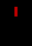 |
開いたカーテン open curtain |
OPEN_CURTAIN | 赤/Red | 10 | 視界が通る, 飛び道具が通過できる, 移動可能, モンスター配置可, アイテムを落とせる, 走行時に足を止める対象, 常に記憶される, 閉じるコマンド対象, 飛行で通過可, 分解属性の対象, テレポート先になれる | door pow 0 | 破壊された後/When destroyed → FLOOR 閉じた後/After closing → CLOSED_CURTAIN |
||
| 221 | 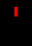 |
カーテン curtain |
CLOSED_CURTAIN | 明るい赤/Light Red | 10 | 飛び道具が通過できる, 移動可能, モンスター配置可, アイテムを落とせる, 走行時に足を止める対象, 常に記憶される, 開けるコマンド対象, 分解属性の対象, テレポート先になれる | door pow 0 | 破壊された後/When destroyed → FLOOR 開けた後/After opening → OPEN_CURTAIN |
||
| 222 | 岩石 pile of rubble |
RUBBLE_ON_SHALLOW_WATER | 白/White | ○ | 2 | 常に記憶される, アイテムを含む, 岩石溶解の対象, 通過可能, 掘削コマンド対象, 分解属性の対象 | tunnel pow 10 | 破壊された後/When destroyed → SHALLOW_WATER | ||
| 223 | 溶岩の鉱脈 magma vein |
MAGMA_VEIN_ON_SHALLOW_WATER | 灰色/Gray (Slate) | ○ | 2 | 常に記憶される, 壁である, 岩石溶解の対象, 通過可能, 分解属性の対象 | tunnel pow 10 | 破壊された後/When destroyed → SHALLOW_WATER 財宝を含む可能性/May contain gold → MAGMA_TREASURE |
||
| 224 | 石英の鉱脈 quartz vein |
QUARTZ_VEIN_ON_SHALLOW_WATER | 白/White | ○ | 2 | 常に記憶される, 壁である, 岩石溶解の対象, 通過可能, 分解属性の対象 | tunnel pow 20 | 破壊された後/When destroyed → SHALLOW_WATER 財宝を含む可能性/May contain gold → QUARTZ_TREASURE |
||
| 225 | 花崗岩の壁 granite wall |
GRANITE_ON_SHALLOW_WATER | 白/White | ○ | 2 | 常に記憶される, 壁である, 岩石溶解の対象, 通過可能, 分解属性の対象 | tunnel pow 40 | 破壊された後/When destroyed → SHALLOW_WATER | ||
| 226 | ガラスの壁 glass wall |
GLASS_WALL_ON_SHALLOW_WATER | 白/White | ○ | 2 | 視界が通る, 常に記憶される, 壁である, 岩石溶解の対象, 通過可能, 分解属性の対象, ガラス製 | tunnel pow 40 | 破壊された後/When destroyed → SHALLOW_WATER | ||
| 227 | 極低温帯 heavy cold zone |
HEAVY_COLD_ZONE | 青/Blue | 2 | 視界が通る, 飛び道具が通過できる, 移動可能, モンスター配置可, 常に記憶される, 冷気溜まりがある, 深い, 飛行で通過可, テレポート先になれる | |||||
| 228 | 低温帯 cold zone |
COLD_ZONE | 明るい青/Light Blue | 2 | 視界が通る, 飛び道具が通過できる, 移動可能, モンスター配置可, アイテムを落とせる, 常に記憶される, 冷気溜まりがある, 浅い, 飛行で通過可, テレポート先になれる | |||||
| 229 | 高圧帯電帯 heavy electrical zone |
HEAVY_ELECTRICAL_ZONE | 黄/Yellow | 2 | 視界が通る, 飛び道具が通過できる, 移動可能, モンスター配置可, 常に記憶される, 常に光っている, 帯電している, 深い, 飛行で通過可, テレポート先になれる | |||||
| 230 | 帯電帯 electrical zone |
ELECTRICAL_ZONE | オレンジ/Orange | 2 | 視界が通る, 飛び道具が通過できる, 移動可能, モンスター配置可, アイテムを落とせる, 常に記憶される, 帯電している, 浅い, 飛行で通過可, テレポート先になれる | |||||
| 231 | 深い酸の沼 deep acid puddle |
DEEP_ACID_PUDDLE | 茶/Brown (Umber) | 2 | 視界が通る, 飛び道具が通過できる, 移動可能, モンスター配置可, 常に記憶される, 酸溜まりがある, 深い, 飛行で通過可, テレポート先になれる | |||||
| 232 | 浅い酸の沼 shallow acid puddle |
SHALLOW_ACID_PUDDLE | 明るい茶/Light Brown | 2 | 視界が通る, 飛び道具が通過できる, 移動可能, モンスター配置可, アイテムを落とせる, 常に記憶される, 酸溜まりがある, 浅い, 飛行で通過可, テレポート先になれる | |||||
| 233 | 深い毒の沼 deep poisonous puddle |
DEEP_POISONOUS_PUDDLE | 緑/Green | 2 | 視界が通る, 飛び道具が通過できる, 移動可能, モンスター配置可, 常に記憶される, 毒溜まりがある, 深い, 飛行で通過可, テレポート先になれる | |||||
| 234 | 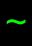 |
浅い毒の沼 shallow poisonous puddle |
SHALLOW_POISONOUS_PUDDLE | 明るい緑/Light Green | 2 | 視界が通る, 飛び道具が通過できる, 移動可能, モンスター配置可, アイテムを落とせる, 常に記憶される, 毒溜まりがある, 浅い, 飛行で通過可, テレポート先になれる | ||||
| 235 | 岩石 pile of rubble |
RUBBLE_ON_DEEP_WATER | 白/White | ○ | 2 | 常に記憶される, アイテムを含む, 岩石溶解の対象, 通過可能, 掘削コマンド対象, 分解属性の対象 | tunnel pow 10 | 破壊された後/When destroyed → DEEP_WATER | ||
| 236 | 溶岩の鉱脈 magma vein |
MAGMA_VEIN_ON_DEEP_WATER | 灰色/Gray (Slate) | ○ | 2 | 常に記憶される, 壁である, 岩石溶解の対象, 通過可能, 分解属性の対象 | tunnel pow 10 | 破壊された後/When destroyed → DEEP_WATER 財宝を含む可能性/May contain gold → MAGMA_TREASURE |
||
| 237 | 石英の鉱脈 quartz vein |
QUARTZ_VEIN_ON_DEEP_WATER | 白/White | ○ | 2 | 常に記憶される, 壁である, 岩石溶解の対象, 通過可能, 分解属性の対象 | tunnel pow 20 | 破壊された後/When destroyed → DEEP_WATER 財宝を含む可能性/May contain gold → QUARTZ_TREASURE |
||
| 238 | 花崗岩の壁 granite wall |
GRANITE_ON_DEEP_WATER | 白/White | ○ | 2 | 常に記憶される, 壁である, 岩石溶解の対象, 通過可能, 分解属性の対象 | tunnel pow 40 | 破壊された後/When destroyed → DEEP_WATER | ||
| 239 | ガラスの壁 glass wall |
GLASS_WALL_ON_DEEP_WATER | 白/White | ○ | 2 | 視界が通る, 常に記憶される, 壁である, 岩石溶解の対象, 通過可能, 分解属性の対象, ガラス製 | tunnel pow 40 | 破壊された後/When destroyed → DEEP_WATER | ||
| 240 | 財宝を含有した石英の鉱脈 quartz vein with treasure |
QUARTZ_TREASURE_2 | オレンジ/Orange | ○ | 2 | 常に記憶される, 壁である, 岩石溶解の対象, 通過可能, 分解属性の対象 | tunnel pow 30 | 破壊された後/When destroyed → FLOOR 落とす財宝(ダイス)/Gold dropped (dice) → 2d2 隠された時/When re-hidden → QUARTZ_HIDDEN_2 |
||
| 241 | 財宝を含有した石英の鉱脈 quartz vein with treasure |
QUARTZ_TREASURE_3 | オレンジ/Orange | ○ | 2 | 常に記憶される, 壁である, 岩石溶解の対象, 通過可能, 分解属性の対象 | tunnel pow 30 | 破壊された後/When destroyed → FLOOR 落とす財宝(ダイス)/Gold dropped (dice) → 3d3 隠された時/When re-hidden → QUARTZ_HIDDEN_3 |
||
| 242 | 石英の鉱脈(隠された財宝を含有) quartz vein hidden treasure |
QUARTZ_HIDDEN_2 | 白/White | ○ | 2 | QUARTZ_VEIN | 隠し扉/罠が潜む, 常に記憶される, 壁である, 岩石溶解の対象, 通過可能, 分解属性の対象 | tunnel pow 30 | 破壊された後/When destroyed → FLOOR 落とす財宝(ダイス)/Gold dropped (dice) → 2d2 隠し状態(擬態元)/Secret (hidden form) → QUARTZ_TREASURE_2 |
|
| 243 | 石英の鉱脈(隠された財宝を含有) quartz vein hidden treasure |
QUARTZ_HIDDEN_3 | 白/White | ○ | 2 | QUARTZ_VEIN | 隠し扉/罠が潜む, 常に記憶される, 壁である, 岩石溶解の対象, 通過可能, 分解属性の対象 | tunnel pow 30 | 破壊された後/When destroyed → FLOOR 落とす財宝(ダイス)/Gold dropped (dice) → 3d3 隠し状態(擬態元)/Secret (hidden form) → QUARTZ_TREASURE_3 |
凡例 / Legend
表示色 / Display Colors (16)
| Token | 日本語 | English |
|---|---|---|
White |
白 | White |
Light Brown |
明るい茶 | Light Brown |
Light Blue |
明るい青 | Light Blue |
Orange |
オレンジ | Orange |
Red |
赤 | Red |
Green |
緑 | Green |
Gray |
灰色 | Gray (Slate) |
Violet |
紫 | Violet |
Brown |
茶 | Brown (Umber) |
Blue |
青 | Blue |
Yellow |
黄 | Yellow |
Light Green |
明るい緑 | Light Green |
Dark Gray |
暗い灰色 | Dark Gray |
Light Red |
明るい赤 | Light Red |
Light Gray |
明るい灰色 | Light Gray |
Black |
黒 | Black |
地形特性フラグ / Terrain Characteristic Flags (56)
| Token | 日本語 | English |
|---|---|---|
LOS |
視界が通る | Line of sight passes |
PROJECTION |
飛び道具が通過できる | Projectiles pass through |
MOVE |
移動可能 | Can be walked on |
PLACE |
モンスター配置可 | Monsters may be placed |
DROP |
アイテムを落とせる | Items may be dropped |
SECRET |
隠し扉/罠が潜む | May hide a secret door/trap |
NOTICE |
走行時に足を止める対象 | Interesting; stops running |
REMEMBER |
常に記憶される | Always remembered |
OPEN |
開けるコマンド対象 | Can be opened |
CLOSE |
閉じるコマンド対象 | Can be closed |
BASH |
体当たり対象 | Can be bashed |
SPIKE |
くさびを打てる | Can be spiked |
DISARM |
解除コマンド対象 | Can be disarmed |
STORE |
店舗の入口 | Shop entrance |
HAS_ITEM |
アイテムを含む | Contains an item |
TRAP |
トラップがある | Has a trap |
HIT_TRAP |
踏むと罠が発動 | Triggers a trap when entered |
STAIRS |
階段がある | Has stairs |
UP_STAIRS |
上りに通じる | Leads upward |
DOWN_STAIRS |
下りに通じる | Leads downward |
SHAFT |
坑道(2階層移動) | Shaft (descends two levels) |
RUNE_PROTECTION |
守りのルーン | Rune of protection |
RUNE_EXPLOSION |
爆発のルーン | Explosive rune |
AVOID_RUN |
自動移動で迂回 | Avoided when auto-running |
FLOOR |
床である | Is a floor |
WALL |
壁である | Is a wall |
PERMANENT |
破壊不能の永久地形 | Indestructible / permanent |
GLOW |
常に光っている | Always glowing |
WATER |
水がある | Has water |
LAVA |
溶岩がある | Has lava |
SHALLOW |
浅い | Shallow |
DEEP |
深い | Deep |
POISON_PUDDLE |
毒溜まりがある | Poison puddle |
COLD_PUDDLE |
冷気溜まりがある | Cold puddle |
ACID_PUDDLE |
酸溜まりがある | Acid puddle |
ELEC_PUDDLE |
帯電している | Electrified puddle |
STONE |
岩石溶解の対象 | Subject to stone-to-mud |
CAN_FLY |
飛行で通過可 | Can be flown over |
CAN_SWIM |
泳いで通過可 | Can be swum |
CAN_PASS |
通過可能 | Can pass through |
CAN_DIG |
掘削コマンド対象 | Can be dug |
CAN_DISINTEGRATE |
分解属性の対象 | Can be disintegrated |
TREE |
木が生えている | Has a tree |
PLANT |
植物が生えている | Has a plant |
MOUNTAIN |
山地形(広域) | Mountain (wilderness) |
SPECIAL |
特別な地形 | Special quest/dungeon grid |
QUEST |
クエスト関連 | Quest-related |
QUEST_ENTER |
クエストの入口 | Quest entrance |
QUEST_EXIT |
クエストの出口 | Quest exit |
BLDG |
施設の入口 | Building entrance |
PATTERN |
パターンがある | Is part of the Pattern |
TOWN |
街がある(広域) | Town (wilderness) |
ENTRANCE |
ダンジョン入口(広域) | Dungeon entrance (wilderness) |
MIRROR |
鏡が張られている | Has a mage's mirror |
TELEPORTABLE |
テレポート先になれる | Valid teleport destination |
GLASS |
ガラス製 | Made of glass |
トラップ種別 / Trap Types (21)
| Token | 日本語 | English |
|---|---|---|
TRAPDOOR |
落とし戸 | Trap door |
PIT |
落とし穴 | Pit |
SPIKED_PIT |
スパイクの落とし穴 | Spiked pit |
POISON_PIT |
毒針の落とし穴 | Poison pit |
TY_CURSE |
テレポート・レベルの呪い(TYの呪い) | Ty curse |
TELEPORT |
テレポート | Teleport |
FIRE |
火炎 | Fire |
ACID |
酸 | Acid |
SLOW |
減速(ダーツ) | Slow (dart) |
LOSE_STR |
腕力減少(ダーツ) | Lose STR (dart) |
LOSE_DEX |
器用さ減少(ダーツ) | Lose DEX (dart) |
LOSE_CON |
耐久力減少(ダーツ) | Lose CON (dart) |
BLIND |
盲目ガス | Blind (gas) |
CONFUSE |
混乱ガス | Confuse (gas) |
POISON |
毒ガス | Poison (gas) |
SLEEP |
睡眠ガス | Sleep (gas) |
TRAPS |
トラップ召喚 | Summon traps |
ALARM |
警報 | Alarm |
OPEN |
開放(周囲の壁破壊) | Open (wall-breaker) |
ARMAGEDDON |
ハルマゲドン召喚 | Armageddon summon |
PIRANHA |
ピラニア(水路化) | Piranha |
店舗種別 / Shop Types (10)
| Token | 日本語 | English |
|---|---|---|
GENERAL |
雑貨屋 | General Store |
ARMOURY |
防具屋 | Armoury |
WEAPON |
武器専門店 | Weaponsmith |
TEMPLE |
寺院 | Temple |
ALCHEMIST |
錬金術の店 | Alchemist |
MAGIC |
魔法の店 | Magic Shop |
BLACK |
ブラックマーケット | Black Market |
HOME |
我が家 | Home |
BOOK |
書店 | Bookstore |
MUSEUM |
博物館 | Museum |
パターン種別 / Pattern Grid Types (9)
| Token | 日本語 | English |
|---|---|---|
START |
パターンの開始 | Pattern start |
TILE_1 |
パターン第1区画 | Pattern tile 1 |
TILE_2 |
パターン第2区画 | Pattern tile 2 |
TILE_3 |
パターン第3区画 | Pattern tile 3 |
TILE_4 |
パターン第4区画 | Pattern tile 4 |
END |
パターンの終点 | Pattern end |
OLD |
古いパターン | Old pattern |
TELEPORT |
パターン・テレポート | Pattern teleport |
WRECKED |
壊れたパターン | Wrecked pattern |
生成時の変換種別 / Generation Convert Types (6)
| Token | 日本語 | English |
|---|---|---|
FLOOR |
床に変換 | To floor |
WALL |
壁に変換 | To wall |
INNER |
内壁に変換 | To inner wall |
OUTER |
外壁に変換 | To outer wall |
SOLID |
固い壁に変換 | To solid wall |
STREAM |
鉱脈/流れに変換 | To stream/vein |
行動キー(変化条件) / Interaction Keys (13)
| Token | 日本語 | English |
|---|---|---|
BASH |
体当たり後 | After bashing |
CLOSE |
閉じた後 | After closing |
OPEN |
開けた後 | After opening |
DISARM |
解除後 | After disarming |
SPIKE |
くさびを打った後 | After spiking |
DESTROYED |
破壊された後 | When destroyed |
HIT_TRAP |
罠発動後 | After trap triggers |
SECRET |
隠し状態(擬態元) | Secret (hidden form) |
ENSECRET |
隠された時 | When re-hidden |
UNPERM |
永久解除時 | When made non-permanent |
SHAFT |
坑道化時 | As a shaft |
DROP_GOLD |
落とす財宝(ダイス) | Gold dropped (dice) |
MAY_HAVE_GOLD |
財宝を含む可能性 | May contain gold |
🤖 このページは
lib/edit/TerrainDefinitions.jsoncから自動生成されています。手動で編集しないでください — 変更は次回の再生成で上書きされます。 This page is auto-generated fromlib/edit/TerrainDefinitions.jsonc. Do not edit by hand — changes are overwritten on regeneration. 生成 / Generated: 2026-07-04 02:38 UTC · hengband5ebae9734·tools/generate-wiki.mjs